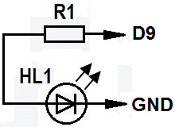

Программная регулировка яркости светодиодов
Если светодиод половину времени будет включён, а половину выключен, то визуально будет казаться, что он светится в половину своей яркости. Это называется широтно-импульсная модуляция (ШИМ или PWM по-английски). С помощью ШИМ можно управлять "аналоговым" компонентом с помощью цифрового кода. Для этих целей подходят те выводы Arduino, около которых нарисовано такое обозначение "~". Такими являются выводы 3, 5, 6, 9, 10, 11.
Для реализации ШИМ применяется процедура analogWrite имееющий следующий синтаксис:
analogWrite(вывод, значение);
- вывод - номер вывода ШИМ,
- значение - значение ШИМ (0-255), применительно к светодиодам это будет их яркость свечения.
0 - всегда выключен, 255 - всегда включен.

Соедините светодиод с выводом 9 (рис. 1) и запустите скетчи представленные ниже.
Скетч 1
При выполнении данного скетча яркость изменяется ступенчато.
int ledPin = 9; //к этому выводу подсоединен светодиод void setup() { pinMode(ledPin, OUTPUT);// инициализация пина на вывод } void loop() { analogWrite(ledPin, 255); //полная яркость (255/255 = 1) delay(1000); // пауза 1 сек digitalWrite(ledPin, LOW); //выключить светодиод delay(1000); //пауза 1 сек analogWrite(ledPin, 191); //яркость на 3/4 (191/255≈ 0,75) delay(1000); //пауза 1 сек digitalWrite(ledPin, LOW); //выключить светодиод delay(1000); //пауза 1 сек analogWrite(ledPin, 127); //половина яркости (127/255≈0,5) delay(1000); // пауза 1 сек digitalWrite(ledPin, LOW); //выключить светодиод delay(1000); //пауза 1 сек analogWrite(ledPin, 63); //четверть яркости (63/255≈0,25) delay(1000); // пауза 1 сек digitalWrite(ledPin, LOW); //выключить светодиод delay(1000); //пауза 1 сек }
Скетч 2
Светодиод должен увеличить, а затем плавно уменьшить яркость.
delay(20) используется, чтобы замедлить скорость нарастания и уменьшения яркости.
int ledPin = 9; //светодиод подключен к выводу 9 int intensity; //яркость светодиода void setup() { pinMode(ledPin, OUTPUT);// инициализация пина на выход } void loop() { //плавно увеличиваем яркость (0 to 255) for (intensity=0;intensity<=255;intensity++) { analogWrite(ledPin,intensity); delay(20); } delay(2000);//ждем 2 сек //плавно уменьшаем яркость (255 to 0) for (intensity=255;intensity>=0;intensity--) { analogWrite(ledPin,intensity); delay(20); } delay(2000);//ждем 2 сек }